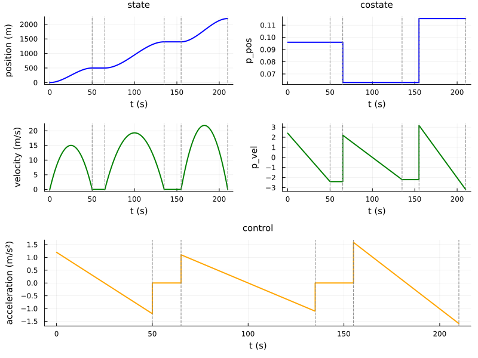
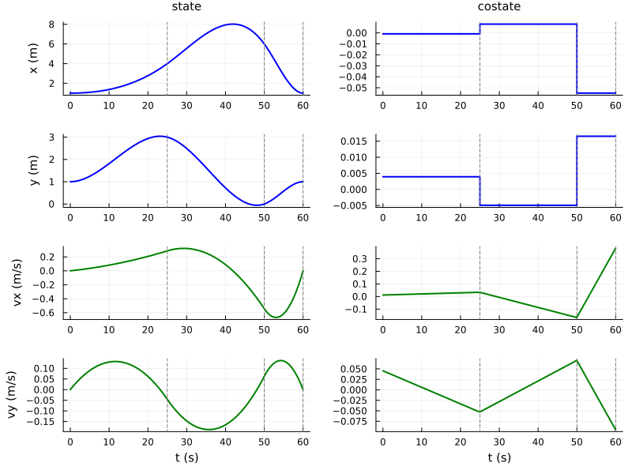
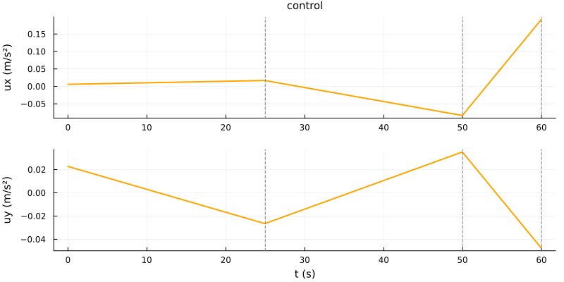
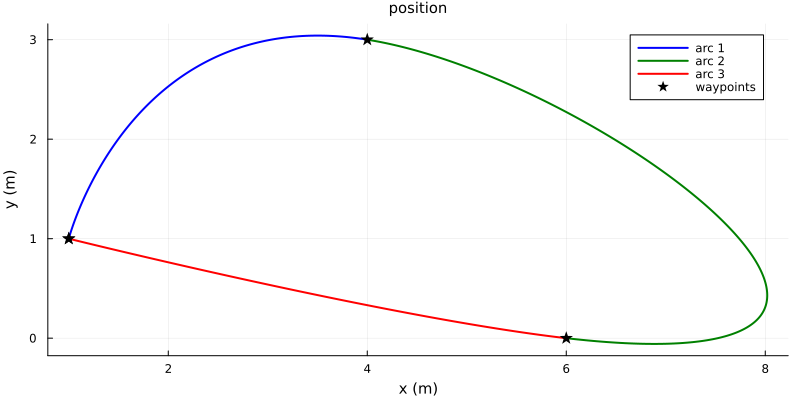
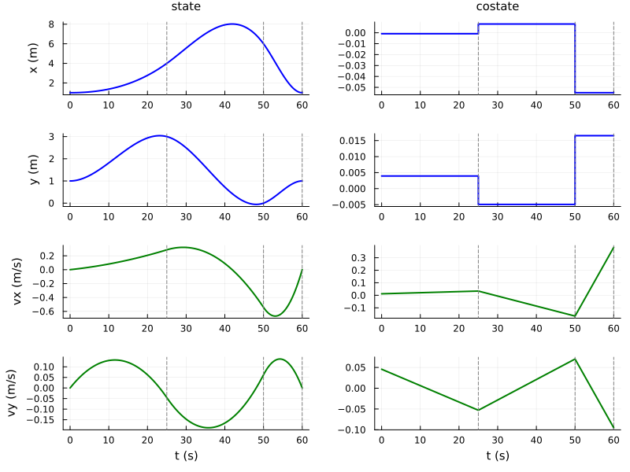
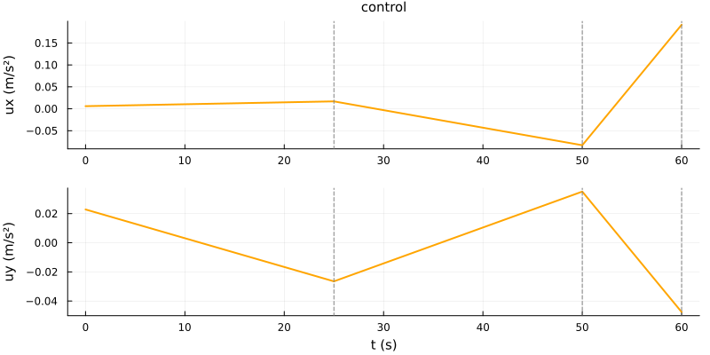
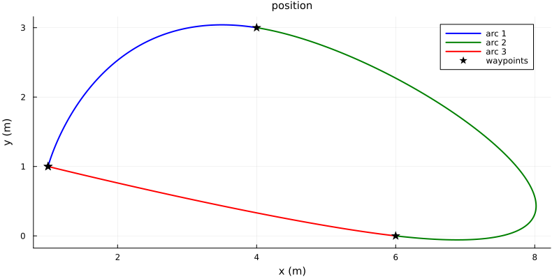

Constraints at intermediate times
In this tutorial, we address a class of optimal control problems where constraints must be enforced at intermediate times $t_s \in (t_0, t_f)$, such as passing through a waypoint or stopping at a station. Since OptimalControl.jl does not natively support such constraints, we use a multi-arc augmentation technique with time normalisation.
The multi-arc augmentation technique
Motivation
Consider an optimal control problem on $[t_0, t_f]$ with dynamics $\dot{x}(t) = f(x(t), u(t))$ and cost $\int_{t_0}^{t_f} f^0(x(t), u(t))\, \mathrm{d}t$. Suppose we have intermediate times
\[t_0 < t_1 < \dots < t_N = t_f\]
with constraints $c_s(x(t_s)) = 0$ at each $t_s$. The idea is to split the problem into $N$ arcs, one per interval $[t_{k-1}, t_k]$, and reformulate them as a single OCP on the normalised time $s \in [0, 1]$.
Time normalisation
On each arc $k$, we introduce the affine change of time
\[\varphi_k(s) = t_{k-1} + \Delta t_k\, s, \quad \Delta t_k = t_k - t_{k-1}, \quad s \in [0, 1].\]
The state on arc $k$ is $q_k(s) = x(\varphi_k(s))$, and by the chain rule
\[\dot{q}_k(s) = \Delta t_k\, f(q_k(s), v_k(s)),\]
where $v_k(s) = u(\varphi_k(s))$ is the control on arc $k$.
Augmented problem
The $N$ arcs are combined into a single OCP on $[0, 1]$ with:
- Augmented state: $y = (q_1, \dots, q_N) \in \mathbb{R}^{nN}$
- Augmented control: $w = (v_1, \dots, v_N) \in \mathbb{R}^{mN}$
- Dynamics: $\dot{q}_k(s) = \Delta t_k\, f(q_k(s), v_k(s))$ for each $k$
- Cost: $\sum_{k=1}^{N} \Delta t_k \int_0^1 f^0(q_k(s), v_k(s))\, \mathrm{d}s$
- Boundary conditions: $c_s(q_k(0)) = 0$ and $c_s(q_k(1)) = 0$ as needed
- Continuity: $q_k(1) = q_{k+1}(0)$ for $k = 1, \dots, N-1$
This augmented problem can be solved directly by OptimalControl.jl as a standard OCP on $[0, 1]$.
Example 1: a tram with intermediate stops
We consider a tram (point mass) travelling between four stations at positions $0, 500, 1400, 2200$ m. The tram must stop at each intermediate station for passenger boarding. The control is the acceleration, and we minimise the total energy (sum of squared accelerations).
There are three arcs (one per travel segment) separated by stop phases at the two intermediate stations. The travel times are 50 s, 70 s and 55 s, with stop durations of 15 s and 20 s, giving a total schedule of $50 + 15 + 70 + 20 + 55 = 210$ s. Note that the segment lengths and travel times are not proportional, making the problem asymmetric.
using OptimalControl
using NLPModelsIpopt
using Plots
# Station positions along the track (in meters)
station_0 = 0.0 # Starting station
station_1 = 500.0 # First intermediate station
station_2 = 1400.0 # Second intermediate station
station_3 = 2200.0 # Final destination
# Time schedule (in seconds)
t0 = 0.0
t1 = 50.0 # Arrival at station 1
t2 = 135.0 # Arrival at station 2 (50 s travel + 15 s stop + 70 s travel)
t3 = 210.0 # Arrival at station 3 (… + 20 s stop + 55 s travel)
# Stop durations at intermediate stations
stop_time_1 = 15.0 # seconds at station 1
stop_time_2 = 20.0 # seconds at station 2
# Travel time for each arc (excluding stops)
Δt1 = t1 - t0 # 50 s
Δt2 = t2 - t1 - stop_time_1 # 70 s
Δt3 = t3 - t2 - stop_time_2 # 55 sDirect method
We define the augmented OCP on $s \in [0, 1]$ with a 6-dimensional state (position and velocity for each arc) and a 3-dimensional control (acceleration for each arc).
@def ocp_3arc begin
s ∈ [0, 1], time
y = (pos1, vel1, pos2, vel2, pos3, vel3) ∈ R^6, state
w = (acc1, acc2, acc3) ∈ R^3, control
# Initial conditions (arc 1 starts from station 0 at rest)
pos1(0) == station_0
vel1(0) == 0.0
# Terminal conditions for arc 1 (arrive at station 1, stop)
pos1(1) == station_1
vel1(1) == 0.0
# Continuity between arc 1 and arc 2
pos2(0) - pos1(1) == 0
vel2(0) - vel1(1) == 0
# Terminal conditions for arc 2 (arrive at station 2, stop)
pos2(1) == station_2
vel2(1) == 0.0
# Continuity between arc 2 and arc 3
pos3(0) - pos2(1) == 0
vel3(0) - vel2(1) == 0
# Terminal conditions for arc 3 (arrive at station 3, stop)
pos3(1) == station_3
vel3(1) == 0.0
# Dynamics (time-normalised double integrator for each arc)
ẏ(s) == [
Δt1 * vel1(s), Δt1 * acc1(s),
Δt2 * vel2(s), Δt2 * acc2(s),
Δt3 * vel3(s), Δt3 * acc3(s)
]
# Objective: minimise total energy
∫(Δt1 * acc1(s)^2 + Δt2 * acc2(s)^2 + Δt3 * acc3(s)^2) → min
endWe now solve the augmented problem:
sol_direct = solve(ocp_3arc)▫ This is OptimalControl 2.0.4, solving with: collocation → adnlp → ipopt (cpu)
📦 Configuration:
├─ Discretizer: collocation
├─ Modeler: adnlp
└─ Solver: ipopt
▫ This is Ipopt version 3.14.19, running with linear solver MUMPS 5.8.2.
Number of nonzeros in equality constraint Jacobian...: 5266
Number of nonzeros in inequality constraint Jacobian.: 0
Number of nonzeros in Lagrangian Hessian.............: 750
Total number of variables............................: 2256
variables with only lower bounds: 0
variables with lower and upper bounds: 0
variables with only upper bounds: 0
Total number of equality constraints.................: 1512
Total number of inequality constraints...............: 0
inequality constraints with only lower bounds: 0
inequality constraints with lower and upper bounds: 0
inequality constraints with only upper bounds: 0
iter objective inf_pr inf_du lg(mu) ||d|| lg(rg) alpha_du alpha_pr ls
0 1.7500000e+00 2.20e+03 8.45e-16 0.0 0.00e+00 - 0.00e+00 0.00e+00 0
1 9.8500550e+01 4.55e-13 1.33e-15 -11.0 2.20e+03 - 1.00e+00 1.00e+00h 1
Number of Iterations....: 1
(scaled) (unscaled)
Objective...............: 9.8500549796014781e+01 9.8500549796014781e+01
Dual infeasibility......: 1.3322676295501878e-15 1.3322676295501878e-15
Constraint violation....: 4.5474735088646412e-13 4.5474735088646412e-13
Variable bound violation: 0.0000000000000000e+00 0.0000000000000000e+00
Complementarity.........: 0.0000000000000000e+00 0.0000000000000000e+00
Overall NLP error.......: 4.5474735088646412e-13 4.5474735088646412e-13
Number of objective function evaluations = 2
Number of objective gradient evaluations = 2
Number of equality constraint evaluations = 2
Number of inequality constraint evaluations = 0
Number of equality constraint Jacobian evaluations = 2
Number of inequality constraint Jacobian evaluations = 0
Number of Lagrangian Hessian evaluations = 1
Total seconds in IPOPT = 6.448
EXIT: Optimal Solution Found.• Solver:
✓ Successful : true
│ Status : first_order
│ Message : Ipopt/generic
│ Iterations : 1
│ Objective : 98.50054979601478
└─ Constraints violation : 4.547473508864641e-13
• Boundary duals: [0.09600153602457652, 2.4000384006144104, -0.033026767495335375, 4.6041552991378545, 0.06297476852924115, 2.2041168985234405, 0.05242903135003915, 5.377721395203653, 0.1154037998792803, 3.17360449668021, -0.1154037998792803, 3.1736044966802117]
Plotting the multi-arc solution
Since the augmented problem is defined on the normalised time $s \in [0, 1]$, the solution from OptimalControl.jl is given in terms of $s$. To visualise the trajectory in real time, we need to reassemble the arcs: extract the state and control for each arc, map $s$ back to physical time via $\varphi_k(s)$, and insert the stop phases between arcs.
Code for plotting
function plot_tram_solution(sol)
# Extract state, control, and costate from the augmented solution
t = time_grid(sol)
Y = state(sol).(t)
W = control(sol).(t)
P = costate(sol).(t)
# Real-time grids for each arc (excluding stops)
t_arc1 = t0 .+ Δt1 .* t
t_arc2 = (t1 + stop_time_1) .+ Δt2 .* t
t_arc3 = (t2 + stop_time_2) .+ Δt3 .* t
# Extract per-arc states, controls, and costates
pos1_vals = [y[1] for y in Y]; vel1_vals = [y[2] for y in Y]; acc1_vals = [w[1] for w in W]
pos2_vals = [y[3] for y in Y]; vel2_vals = [y[4] for y in Y]; acc2_vals = [w[2] for w in W]
pos3_vals = [y[5] for y in Y]; vel3_vals = [y[6] for y in Y]; acc3_vals = [w[3] for w in W]
ppos1_vals = [p[1] for p in P]; pvel1_vals = [p[2] for p in P]
ppos2_vals = [p[3] for p in P]; pvel2_vals = [p[4] for p in P]
ppos3_vals = [p[5] for p in P]; pvel3_vals = [p[6] for p in P]
# Build full real-time arrays including stop phases
# Arc 1
t_all = collect(t_arc1)
pos_all = copy(pos1_vals); vel_all = copy(vel1_vals); acc_all = copy(acc1_vals)
ppos_all = copy(ppos1_vals); pvel_all = copy(pvel1_vals)
# Stop at station 1 (hold terminal costate to visualise jumps)
append!(t_all, range(t_arc1[end], t1 + stop_time_1; length=10))
append!(pos_all, fill(station_1, 10)); append!(vel_all, zeros(10)); append!(acc_all, zeros(10))
append!(ppos_all, fill(ppos1_vals[end], 10)); append!(pvel_all, fill(pvel1_vals[end], 10))
# Arc 2
append!(t_all, collect(t_arc2))
append!(pos_all, pos2_vals); append!(vel_all, vel2_vals); append!(acc_all, acc2_vals)
append!(ppos_all, ppos2_vals); append!(pvel_all, pvel2_vals)
# Stop at station 2
append!(t_all, range(t_arc2[end], t2 + stop_time_2; length=10))
append!(pos_all, fill(station_2, 10)); append!(vel_all, zeros(10)); append!(acc_all, zeros(10))
append!(ppos_all, fill(ppos2_vals[end], 10)); append!(pvel_all, fill(pvel2_vals[end], 10))
# Arc 3
append!(t_all, collect(t_arc3))
append!(pos_all, pos3_vals); append!(vel_all, vel3_vals); append!(acc_all, acc3_vals)
append!(ppos_all, ppos3_vals); append!(pvel_all, pvel3_vals)
# Font settings (matching CTModels.jl defaults)
title_font = font(10, Plots.default(:fontfamily))
label_font_size = 10
# State (left column)
plt1 = plot(t_all, pos_all; title="state", xlabel="t (s)", ylabel="position (m)", label=false, linewidth=2, color=:blue, titlefont=title_font, xguidefontsize=label_font_size, yguidefontsize=label_font_size)
vline!(plt1, [t1, t1 + stop_time_1, t2, t2 + stop_time_2, t3]; linestyle=:dash, color=:gray, label=false)
plt3 = plot(t_all, vel_all; xlabel="t (s)", ylabel="velocity (m/s)", label=false, linewidth=2, color=:green, xguidefontsize=label_font_size, yguidefontsize=label_font_size)
vline!(plt3, [t1, t1 + stop_time_1, t2, t2 + stop_time_2, t3]; linestyle=:dash, color=:gray, label=false)
plt_state = plot(plt1, plt3; layout=(2, 1))
# Costate (right column)
plt2 = plot(t_all, ppos_all; title="costate", xlabel="t (s)", ylabel="p_pos", label=false, linewidth=2, color=:blue, titlefont=title_font, xguidefontsize=label_font_size, yguidefontsize=label_font_size)
vline!(plt2, [t1, t1 + stop_time_1, t2, t2 + stop_time_2, t3]; linestyle=:dash, color=:gray, label=false)
plt4 = plot(t_all, pvel_all; xlabel="t (s)", ylabel="p_vel", label=false, linewidth=2, color=:green, xguidefontsize=label_font_size, yguidefontsize=label_font_size)
vline!(plt4, [t1, t1 + stop_time_1, t2, t2 + stop_time_2, t3]; linestyle=:dash, color=:gray, label=false)
plt_costate = plot(plt2, plt4; layout=(2, 1))
# State | costate side by side
plt_sc = plot(plt_state, plt_costate; layout=(1, 2))
# Control (full width)
plt5 = plot(t_all, acc_all; title="control", xlabel="t (s)", ylabel="acceleration (m/s²)", label=false, linewidth=2, color=:orange, titlefont=title_font, xguidefontsize=label_font_size, yguidefontsize=label_font_size)
vline!(plt5, [t1, t1 + stop_time_1, t2, t2 + stop_time_2, t3]; linestyle=:dash, color=:gray, label=false)
l_final = @layout [a{0.67h}; b{0.33h}]
plot(plt_sc, plt5; layout=l_final, size=(800, 600), leftmargin=10px, bottommargin=10px)
endWe can now plot the solution:
plot_tram_solution(sol_direct)Indirect method
We now solve the same problem using an indirect shooting method based on the Pontryagin Maximum Principle (PMP).
PMP for the augmented problem
The pseudo-Hamiltonian (with $p^0 = -1$) for the augmented OCP is
\[H(y, p, w) = \sum_{k=1}^{3} \Delta t_k \bigl( p_{2k-1}\, v_k + p_{2k}\, a_k - a_k^2 \bigr),\]
where $p = (p_1, p_2, p_3, p_4, p_5, p_6)$ is the costate of the augmented state $y = (pos_1, v_1, pos_2, v_2, pos_3, v_3)$. Maximising over $w = (a_1, a_2, a_3)$ gives
\[a_k^*(s) = \frac{1}{2}\, p_{2k}(s), \qquad k = 1, 2, 3.\]
The costate equations are $\dot p_{2k-1} = 0$ and $\dot p_{2k} = -\Delta t_k\, p_{2k-1}$, so each arc's costate evolves independently.
Transversality conditions and shooting function
The boundary conditions of the augmented OCP can be written as $c(y_0, y_f) = 0$ with $y_0 = y(0)$, $y_f = y(1)$. Setting $\xi(y_0, y_f) \coloneqq \lambda \cdot c(y_0, y_f)$, the general two-point boundary value problem involves $2n + l$ unknowns $(y_0, p_0, \lambda)$ and the same number of equations:
\[c(y_0, y_f) = 0, \qquad p_0 = -\frac{\partial \xi}{\partial y_0}(y_0, y_f), \qquad p_f = \frac{\partial \xi}{\partial y_f}(y_0, y_f).\]
The last two equations are the transversality conditions of the PMP.
In our problem we write the boundary conditions in the equivalent form where all components of $y_0$ and $y_f$ are fixed directly:
\[c(y_0, y_f) = \begin{pmatrix} y_0 - y_0^* \\ y_f - y_f^* \end{pmatrix} = 0,\]
\[y_0^* = (q_0,\, 0,\, q_1,\, 0,\, q_2,\, 0), \qquad y_f^* = (q_1,\, 0,\, q_2,\, 0,\, q_3,\, 0),\]
where $q_0, q_1, q_2, q_3$ are the station positions.
With multipliers $\lambda = (\lambda_0, \lambda_f) \in \mathbb{R}^6 \times \mathbb{R}^6$, the transversality conditions give immediately $\lambda_0 = -p_0$ and $\lambda_f = p_f$: the multipliers are absorbed into the costate, leaving $p_0$ and $p_f$ free. Eliminating $\lambda$ and substituting into $c = 0$ yields the sole conditions $y_0 = y_0^*$ and $y_f = y_f^*$ — no constraint on $p_0$ or $p_f$.
Reduction. Since $y_0 = y_0^*$ is fully determined, it is hardcoded as the initial state of the Hamiltonian flow. The only free quantities at $s = 0$ are the costate components $p_0 \in \mathbb{R}^6$. The shooting equations are the $n = 6$ terminal state conditions $y_f = y_f^*$:
\[S(p_0) \coloneqq \pi_x\!\bigl(\Phi^H(0,\, y_0^*,\, p_0,\, 1)\bigr) - y_f^* = 0 \in \mathbb{R}^6,\]
where $\Phi^H$ is the Hamiltonian flow and $\pi_x$ the state projection (the state part of the phase point).
In the original multi-arc formulation (continuity written as $pos_2(0) - pos_1(1) = 0$, etc.), the same elimination shows that the coupling multipliers are absorbed into $p_0$ and $p_f$, yielding the same shooting function. The costates of different arcs are independent: the terminal costate of arc $k$ need not equal the initial costate of arc $k+1$, reflecting the classical costate jump condition of the multi-arc PMP.
Be careful with the word jump: the augmented costate $p \in \mathbb{R}^6$ is continuous in $s$ (the Hamiltonian flow is smooth). The "jump" appears only when we reassemble in physical time and place the terminal costate of arc $k$ next to the initial costate of arc $k+1$ — these are different components of $p$, so their values differ. It is the augmented-formulation image of the discontinuity of the single costate in the classical interior-point BVP, not a discontinuity of the ODE.
Implementation
using OrdinaryDiffEq
using NonlinearSolve
using LinearAlgebra
# Maximising control in feedback form: a_k* = p_{2k} / 2
u_opt(x, p) = [p[2]/2, p[4]/2, p[6]/2]
# Hamiltonian flow
f_flow = Flow(ocp_3arc, u_opt)
# Initial and target states (fully determined by BCs)
y0 = [station_0, 0.0, station_1, 0.0, station_2, 0.0]
yf_target = [station_1, 0.0, station_2, 0.0, station_3, 0.0]
# State projection from the flow output
π_x((x, p)) = x
# Shooting function: S(p0) = 0 iff terminal state conditions are met
S(p0) = π_x(f_flow(0.0, y0, p0, 1.0)) - yf_target
# Initial guess for the costate from the direct solution
p0_guess = costate(sol_direct)(0.0)
# Solve the shooting equations
nle!(s, p0, _) = s[:] = S(p0)
prob = NonlinearProblem(nle!, p0_guess)
shooting_sol = solve(prob, NewtonRaphson())
p0_sol = shooting_sol.u
println("Shooting residual: ", norm(S(p0_sol)))Shooting residual: 5.857562241215484e-13Solution and comparison
We reconstruct the full trajectory from the shooting solution and plot it:
sol_indirect = f_flow((0.0, 1.0), y0, p0_sol; saveat=range(0.0, 1.0, 200))
plot_tram_solution(sol_indirect)
Example 2: hovercraft path planning
We consider a hovercraft (point mass in the plane) that must pass through a sequence of waypoints at fixed times while minimising thrust energy. Unlike the tram, the hovercraft is not required to stop at the waypoints: its velocity is free at each intermediate time. This changes the structure of the indirect method.
This example is inspired by the hovercraft problem from InfiniteOpt.jl.
The problem is the 2D version of a double integrator:
\[\min \int_0^{T} \|u(t)\|^2 \, \mathrm{d}t, \quad \dot{x} = v, \quad \dot{v} = u, \quad x(t_i) = x_i, \; i \in \{0,1,2,3\},\]
where $x(t), v(t), u(t) \in \mathbb{R}^2$ are the position, velocity and thrust, $x_i$ are the waypoint positions, and the waypoint times $t_i$ are fixed.
# Waypoint positions (2D, in meters)
xw = [1.0 4.0 6.0 1.0;
1.0 3.0 0.0 1.0] # columns: waypoint 0, 1, 2, 3
# Waypoint times (fixed, in seconds)
tw = [0.0, 25.0, 50.0, 60.0]
# Arc durations
Δτ1 = tw[2] - tw[1] # 25 s
Δτ2 = tw[3] - tw[2] # 25 s
Δτ3 = tw[4] - tw[3] # 10 sDirect method
The augmented state is $y = (x_1, v_1, x_2, v_2, x_3, v_3) \in \mathbb{R}^{12}$ (2D position + velocity per arc). Positions at arc endpoints are fixed to the waypoints; velocities at arc junctions are free but must be continuous ($v_k(1) = v_{k+1}(0)$).
@def ocp_hover begin
s ∈ [0, 1], time
y = (x1, y1, vx1, vy1, x2, y2, vx2, vy2, x3, y3, vx3, vy3) ∈ R^12, state
w = (ux1, uy1, ux2, uy2, ux3, uy3) ∈ R^6, control
# Initial conditions: arc 1 starts at waypoint 0, initial velocity fixed to zero
x1(0) == xw[1, 1]
y1(0) == xw[2, 1]
vx1(0) == 0.0
vy1(0) == 0.0
# Arc 1 terminal position: waypoint 1 (velocity free)
x1(1) == xw[1, 2]
y1(1) == xw[2, 2]
# Continuity arc 1 → arc 2 (position and velocity)
x2(0) - x1(1) == 0
y2(0) - y1(1) == 0
vx2(0) - vx1(1) == 0
vy2(0) - vy1(1) == 0
# Arc 2 terminal position: waypoint 2 (velocity free)
x2(1) == xw[1, 3]
y2(1) == xw[2, 3]
# Continuity arc 2 → arc 3 (position and velocity)
x3(0) - x2(1) == 0
y3(0) - y2(1) == 0
vx3(0) - vx2(1) == 0
vy3(0) - vy2(1) == 0
# Arc 3 terminal position: waypoint 3, final velocity fixed to zero
x3(1) == xw[1, 4]
y3(1) == xw[2, 4]
vx3(1) == 0.0
vy3(1) == 0.0
# Dynamics: time-normalised 2D double integrator for each arc
ẏ(s) == [
Δτ1 * vx1(s), Δτ1 * vy1(s), Δτ1 * ux1(s), Δτ1 * uy1(s),
Δτ2 * vx2(s), Δτ2 * vy2(s), Δτ2 * ux2(s), Δτ2 * uy2(s),
Δτ3 * vx3(s), Δτ3 * vy3(s), Δτ3 * ux3(s), Δτ3 * uy3(s)
]
# Objective: minimise total thrust energy
∫(
Δτ1 * (ux1(s)^2 + uy1(s)^2) +
Δτ2 * (ux2(s)^2 + uy2(s)^2) +
Δτ3 * (ux3(s)^2 + uy3(s)^2)
) → min
endsol_hover_direct = solve(ocp_hover)▫ This is OptimalControl 2.0.4, solving with: collocation → adnlp → ipopt (cpu)
📦 Configuration:
├─ Discretizer: collocation
├─ Modeler: adnlp
└─ Solver: ipopt
▫ This is Ipopt version 3.14.19, running with linear solver MUMPS 5.8.2.
Number of nonzeros in equality constraint Jacobian...: 10528
Number of nonzeros in inequality constraint Jacobian.: 0
Number of nonzeros in Lagrangian Hessian.............: 1500
Total number of variables............................: 4512
variables with only lower bounds: 0
variables with lower and upper bounds: 0
variables with only upper bounds: 0
Total number of equality constraints.................: 3020
Total number of inequality constraints...............: 0
inequality constraints with only lower bounds: 0
inequality constraints with lower and upper bounds: 0
inequality constraints with only upper bounds: 0
iter objective inf_pr inf_du lg(mu) ||d|| lg(rg) alpha_du alpha_pr ls
0 1.2000000e+00 5.90e+00 6.38e-15 0.0 0.00e+00 - 0.00e+00 0.00e+00 0
1 1.6362831e-01 1.78e-15 1.11e-16 -11.0 7.92e+00 - 1.00e+00 1.00e+00h 1
Number of Iterations....: 1
(scaled) (unscaled)
Objective...............: 1.6362830862324826e-01 1.6362830862324826e-01
Dual infeasibility......: 1.1102230246251565e-16 1.1102230246251565e-16
Constraint violation....: 1.7763568394002505e-15 1.7763568394002505e-15
Variable bound violation: 0.0000000000000000e+00 0.0000000000000000e+00
Complementarity.........: 0.0000000000000000e+00 0.0000000000000000e+00
Overall NLP error.......: 1.7763568394002505e-15 1.7763568394002505e-15
Number of objective function evaluations = 2
Number of objective gradient evaluations = 2
Number of equality constraint evaluations = 2
Number of inequality constraint evaluations = 0
Number of equality constraint Jacobian evaluations = 2
Number of inequality constraint Jacobian evaluations = 0
Number of Lagrangian Hessian evaluations = 1
Total seconds in IPOPT = 5.087
EXIT: Optimal Solution Found.• Solver:
✓ Successful : true
│ Status : first_order
│ Message : Ipopt/generic
│ Iterations : 1
│ Objective : 0.16362830862324826
└─ Constraints violation : 1.7763568394002505e-15
• Boundary duals: [-0.0008747374190401179, 0.003946737418668674, 0.011910463192171483, 0.0456897416047336, 0.008874864681444123, -0.008874815528351754, 0.008000127262404004, -0.00492807810968308, 0.03377889866817299, -0.052978693861982756, -0.06293398943164163, 0.021461633075917107, -0.05493386216923763, 0.016533554966234026, -0.16622428289192687, 0.07022325888009362, 0.05493386216923763, -0.01653355496623403, -0.3831143388004503, 0.0951122907822452]
Plotting the hovercraft solution
We visualise the hovercraft solution in three complementary views: state and costate (to reveal the PMP structure), control (the thrust components), and trajectory (the 2D path through waypoints).
Code for plotting
# Common extraction of real-time arrays from a hovercraft solution
function hover_extract(sol)
s_grid = time_grid(sol)
Y = state(sol).(s_grid)
W = control(sol).(s_grid)
P = costate(sol).(s_grid)
t_all = vcat(tw[1] .+ Δτ1 .* s_grid, tw[2] .+ Δτ2 .* s_grid, tw[3] .+ Δτ3 .* s_grid)
x_all = vcat([y[1] for y in Y], [y[5] for y in Y], [y[9] for y in Y])
y_all = vcat([y[2] for y in Y], [y[6] for y in Y], [y[10] for y in Y])
vx_all = vcat([y[3] for y in Y], [y[7] for y in Y], [y[11] for y in Y])
vy_all = vcat([y[4] for y in Y], [y[8] for y in Y], [y[12] for y in Y])
ux_all = vcat([w[1] for w in W], [w[3] for w in W], [w[5] for w in W])
uy_all = vcat([w[2] for w in W], [w[4] for w in W], [w[6] for w in W])
px_all = vcat([p[1] for p in P], [p[5] for p in P], [p[9] for p in P])
py_all = vcat([p[2] for p in P], [p[6] for p in P], [p[10] for p in P])
pvx_all = vcat([p[3] for p in P], [p[7] for p in P], [p[11] for p in P])
pvy_all = vcat([p[4] for p in P], [p[8] for p in P], [p[12] for p in P])
return (t_all, x_all, y_all, vx_all, vy_all, ux_all, uy_all,
px_all, py_all, pvx_all, pvy_all)
end
# Font settings (matching CTModels.jl defaults)
title_font = font(10, Plots.default(:fontfamily))
label_font_size = 10
vlines = collect(tw[2:end-1])
vlines_end = vcat(vlines, [tw[end]])
# 1. State | Costate (4 rows x 2 columns)
function plot_hover_state_costate(sol)
# NB: name the position costates pxx/pxy (not px/py): a local `px` would
# shadow the `px` pixel unit from Plots.PlotMeasures, turning `10px` in the
# margins below into a vector and breaking the layout.
(t, x, y, vx, vy, _, _, pxx, pxy, pvx, pvy) = hover_extract(sol)
plt_x = plot(t, x; title="state", ylabel="x (m)", label=false, linewidth=2, color=:blue, titlefont=title_font, xguidefontsize=label_font_size, yguidefontsize=label_font_size)
vline!(plt_x, vlines_end; linestyle=:dash, color=:gray, label=false)
plt_px = plot(t, pxx; title="costate", label=false, linewidth=2, color=:blue, titlefont=title_font, xguidefontsize=label_font_size, yguidefontsize=label_font_size)
vline!(plt_px, vlines_end; linestyle=:dash, color=:gray, label=false)
plt_y = plot(t, y; ylabel="y (m)", label=false, linewidth=2, color=:blue, xguidefontsize=label_font_size, yguidefontsize=label_font_size)
vline!(plt_y, vlines_end; linestyle=:dash, color=:gray, label=false)
plt_py = plot(t, pxy; label=false, linewidth=2, color=:blue, xguidefontsize=label_font_size, yguidefontsize=label_font_size)
vline!(plt_py, vlines_end; linestyle=:dash, color=:gray, label=false)
plt_vx = plot(t, vx; ylabel="vx (m/s)", label=false, linewidth=2, color=:green, xguidefontsize=label_font_size, yguidefontsize=label_font_size)
vline!(plt_vx, vlines_end; linestyle=:dash, color=:gray, label=false)
plt_pvx = plot(t, pvx; label=false, linewidth=2, color=:green, xguidefontsize=label_font_size, yguidefontsize=label_font_size)
vline!(plt_pvx, vlines_end; linestyle=:dash, color=:gray, label=false)
plt_vy = plot(t, vy; xlabel="t (s)", ylabel="vy (m/s)", label=false, linewidth=2, color=:green, xguidefontsize=label_font_size, yguidefontsize=label_font_size)
vline!(plt_vy, vlines_end; linestyle=:dash, color=:gray, label=false)
plt_pvy = plot(t, pvy; xlabel="t (s)", label=false, linewidth=2, color=:green, xguidefontsize=label_font_size, yguidefontsize=label_font_size)
vline!(plt_pvy, vlines_end; linestyle=:dash, color=:gray, label=false)
plot(plt_x, plt_px, plt_y, plt_py, plt_vx, plt_pvx, plt_vy, plt_pvy;
layout=(4, 2), size=(800, 600), leftmargin=10px, bottommargin=10px)
end
# 2. Control (1 row x 2 columns)
function plot_hover_control(sol)
(t, _, _, _, _, ux, uy, _, _, _, _) = hover_extract(sol)
plt_ux = plot(t, ux; title="control", ylabel="ux (m/s²)", label=false, linewidth=2, color=:orange, titlefont=title_font, xguidefontsize=label_font_size, yguidefontsize=label_font_size)
vline!(plt_ux, vlines_end; linestyle=:dash, color=:gray, label=false)
plt_uy = plot(t, uy; xlabel="t (s)", ylabel="uy (m/s²)", label=false, linewidth=2, color=:orange, xguidefontsize=label_font_size, yguidefontsize=label_font_size)
vline!(plt_uy, vlines_end; linestyle=:dash, color=:gray, label=false)
plot(plt_ux, plt_uy; layout=(2, 1), size=(800, 400), leftmargin=10px, bottommargin=10px)
end
# 3. 2D trajectory
function plot_hover_trajectory(sol)
s_grid = time_grid(sol)
Y = state(sol).(s_grid)
x1v = [y[1] for y in Y]; y1v = [y[2] for y in Y]
x2v = [y[5] for y in Y]; y2v = [y[6] for y in Y]
x3v = [y[9] for y in Y]; y3v = [y[10] for y in Y]
plt = plot(x1v, y1v; title="position", label="arc 1", linewidth=2, color=:blue, titlefont=title_font, xguidefontsize=label_font_size, yguidefontsize=label_font_size)
plot!(plt, x2v, y2v; label="arc 2", linewidth=2, color=:green)
plot!(plt, x3v, y3v; label="arc 3", linewidth=2, color=:red)
scatter!(plt, xw[1,:], xw[2,:]; label="waypoints", markersize=7, color=:black, markershape=:star5)
plot!(plt; xlabel="x (m)", ylabel="y (m)", aspect_ratio=:equal, size=(800, 400), leftmargin=10px, bottommargin=10px)
endDirect solution: state and costate
The left column shows the state components (position $x, y$ and velocity $v_x, v_y$); the right column shows the corresponding costates. The vertical dashed lines mark the waypoint times. Note how the velocity costates $p^v_x$ and $p^v_y$ are continuous across junctions, while the position costates $p^x_x$ and $p^x_y$ may jump — this is the key structural difference from the tram problem.
plot_hover_state_costate(sol_hover_direct)
Direct solution: control
The thrust components $u_x$ and $u_y$ are shown below. By the PMP, $u_k^* = \frac{1}{2} p^v_k$, so the control is proportional to the velocity costate.
plot_hover_control(sol_hover_direct)
Direct solution: trajectory
The 2D trajectory passes through the four waypoints (star markers). The hovercraft does not stop at intermediate waypoints — only the final velocity is zero.
plot_hover_trajectory(sol_hover_direct)
Indirect method
We now solve the hovercraft problem with an indirect shooting method. The richer structure of this problem — free velocity at waypoints — produces a more complex shooting function than the tram.
PMP for the augmented problem
The pseudo-Hamiltonian for the augmented hovercraft OCP is
\[H(y, p, w) = \sum_{k=1}^{3} \Delta\tau_k \bigl( p^x_k \cdot v_k + p^v_k \cdot u_k - \|u_k\|^2 \bigr),\]
where the costate per arc is $p_k = (p^x_k,\, p^v_k) \in \mathbb{R}^2 \times \mathbb{R}^2$. Maximising over $u_k \in \mathbb{R}^2$ gives
\[u_k^*(s) = \frac{1}{2}\, p^v_k(s).\]
The costate equations are $\dot p^x_k = 0$ and $\dot p^v_k = -\Delta\tau_k\, p^x_k$.
Transversality conditions and shooting function
The boundary conditions split as:
- Positions at arc endpoints: $x_k(0)$ and $x_k(1)$ are fixed (waypoints) — the corresponding costates $p^x_k$ can jump at junctions.
- Velocities at arc junctions: $v_k(1) = v_{k+1}(0)$ are free (only continuity imposed) — the transversality conditions require the velocity costates to be continuous:
\[p^v_k(1) = p^v_{k+1}(0), \qquad k = 1, 2.\]
These continuity conditions replace costate jumps and add equations to the shooting function.
Shooting unknowns: the 12 costate components $p_k(0) \in \mathbb{R}^4$ for $k = 1,2,3$, plus the 4 junction velocity components $v_{j,1}, v_{j,2} \in \mathbb{R}^2$, giving $z = (p_0, v_{j,1}, v_{j,2}) \in \mathbb{R}^{16}$.
Shooting equations (16 total):
- 6 terminal position conditions: $x_k(1) = x_{k+1}$ for $k = 1,2,3$ (componentwise in $\mathbb{R}^2$)
- 2 final velocity conditions: $v_3(1) = 0$ (componentwise in $\mathbb{R}^2$)
- 4 velocity costate continuity conditions: $p^v_k(1) = p^v_{k+1}(0)$ for $k = 1, 2$ (componentwise in $\mathbb{R}^2$)
- 4 state velocity continuity conditions: $v_k(1) = v_{j,k}$ for $k = 1, 2$ (componentwise in $\mathbb{R}^2$)
\[S(z) \coloneqq \begin{pmatrix} \pi_x\bigl(\Phi^H(0, y_0, p_0, 1)\bigr) - x_f^* \\ v_3(1) \\ p^v_k(1) - p^v_{k+1}(0) \\ v_k(1) - v_{j,k} \end{pmatrix} = 0 \in \mathbb{R}^{16},\]
where $z = (p_0, v_{j,1}, v_{j,2}) \in \mathbb{R}^{16}$ and $y_0 = (x_0, 0,\, x_1, v_{j,1},\, x_2, v_{j,2})$.
In the tram, all velocities at junctions were fixed to zero, leaving only $p_0 \in \mathbb{R}^6$ as unknowns (no velocity costate continuity equations needed). Here, free junction velocities add both unknowns and continuity equations, keeping the system $16 \times 16$.
Both examples obey a single rule. At a junction, read each state component separately:
- a fixed component (a station/waypoint position) ⇒ its costate is free, unconstrained across the junction — it may jump;
- a component required only continuous (a waypoint velocity) ⇒ its costate is continuous across the junction.
This is the classical duality fixed state ⇔ free costate / free state ⇒ costate set by transversality, transported to an interior point. The continuity of the costate for a continuous state holds because the cost has no Mayer term evaluated at the junction: such a term would add its gradient to the transversality condition and make the costate jump even when the state is continuous.
Implementation
# Maximising control in feedback form: u_k* = p^v_k / 2
function u_opt_hover(x, p)
[p[3]/2, p[4]/2, # arc 1: u_1 = p^v_1 / 2
p[7]/2, p[8]/2, # arc 2: u_2 = p^v_2 / 2
p[11]/2, p[12]/2] # arc 3: u_3 = p^v_3 / 2
end
# Hamiltonian flow
f_hover = Flow(ocp_hover, u_opt_hover)
# Fixed components of y0 (positions at waypoints 0, 1, 2; initial velocity = 0)
# Junction velocities (vx1(0), vy1(0), vx2(0), vy2(0) of arcs 2 and 3)
# are determined by direct solution as initial guess
y0_hover_fixed = [xw[1,1], xw[2,1], 0.0, 0.0, # arc 1: x0, y0, vx0=0, vy0=0
xw[1,2], xw[2,2], 0.0, 0.0, # arc 2: x0=xw1, y0=yw1, vx0 free, vy0 free
xw[1,3], xw[2,3], 0.0, 0.0] # arc 3: x0=xw2, y0=yw2, vx0 free, vy0 free
# Build y0 with junction velocities included in shooting unknowns z = (p0, vjunc)
# z[1:12] = p0 (costate at s=0)
# z[13:16] = (vx1_junc, vy1_junc, vx2_junc, vy2_junc) junction velocities
function S_hover(z)
p0 = z[1:12]
vj1 = z[13:14] # junction velocity between arc 1 and 2
vj2 = z[15:16] # junction velocity between arc 2 and 3
# Build full initial state (patch junction velocities)
# Use eltype(z) to support ForwardDiff Duals during Jacobian computation
y0 = Vector{eltype(z)}(y0_hover_fixed)
y0[7:8] = vj1 # arc 2 initial velocity
y0[11:12] = vj2 # arc 3 initial velocity
# Integrate Hamiltonian flow
xf, pf = f_hover(0.0, y0, p0, 1.0)
# Extract terminal positions (conditions: reach target positions)
pos_cond = [xf[1] - xw[1,2], xf[2] - xw[2,2], # arc 1 terminal pos
xf[5] - xw[1,3], xf[6] - xw[2,3], # arc 2 terminal pos
xf[9] - xw[1,4], xf[10] - xw[2,4]] # arc 3 terminal pos
# Final velocity condition (arc 3 must stop)
vel_final_cond = [xf[11], xf[12]]
# Velocity costate continuity: pvy_k(1) = pvy_{k+1}(0)
# arc 1 final vel costate vs arc 2 initial vel costate
pvcont1 = [pf[3] - p0[7], pf[4] - p0[8]] # pvx1(1)==pvx2(0), pvy1(1)==pvy2(0)
# arc 2 final vel costate vs arc 3 initial vel costate
pvcont2 = [pf[7] - p0[11], pf[8] - p0[12]] # pvx2(1)==pvx3(0), pvy2(1)==pvy3(0)
# Velocity continuity (state): v1(1) == v2(0) and v2(1) == v3(0)
vcont1 = [xf[3] - vj1[1], xf[4] - vj1[2]]
vcont2 = [xf[7] - vj2[1], xf[8] - vj2[2]]
return vcat(pos_cond, vel_final_cond, pvcont1, pvcont2, vcont1, vcont2)
end
# Initial guess from the direct solution
p0_hover_guess = costate(sol_hover_direct)(0.0)
y0d = state(sol_hover_direct)(0.0)
vj1_guess = [y0d[7], y0d[8]] # vx2(0), vy2(0) from direct solution (≈ vx1(1), vy1(1))
vj2_guess = [y0d[11], y0d[12]] # vx3(0), vy3(0) from direct solution (≈ vx2(1), vy2(1))
z_guess = vcat(p0_hover_guess, vj1_guess, vj2_guess)
nle_hover!(res, z, _) = res[:] = S_hover(z)
prob_hover = NonlinearProblem(nle_hover!, z_guess)
shooting_hover_sol = solve(prob_hover, NewtonRaphson())
z_sol = shooting_hover_sol.u
println("Hovercraft shooting residual: ", norm(S_hover(z_sol)))Hovercraft shooting residual: 1.3210521364051308e-14Indirect solution: state and costate
The indirect solution reproduces the same state and costate trajectories. The velocity costates $p^v_x$ and $p^v_y$ are continuous at waypoint times (as required by the transversality conditions), while the position costates $p^x_x$ and $p^x_y$ exhibit jumps — these are the costate jumps predicted by the multi-arc PMP.
p0_hover_sol = z_sol[1:12]
vj1_sol = z_sol[13:14]
vj2_sol = z_sol[15:16]
y0_hover_sol = copy(y0_hover_fixed)
y0_hover_sol[7:8] = vj1_sol
y0_hover_sol[11:12] = vj2_sol
sol_hover_indirect = f_hover((0.0, 1.0), y0_hover_sol, p0_hover_sol; saveat=range(0.0, 1.0, 200))
plot_hover_state_costate(sol_hover_indirect)
Indirect solution: control
plot_hover_control(sol_hover_indirect)
Indirect solution: trajectory
plot_hover_trajectory(sol_hover_indirect)
Conclusion
The multi-arc augmentation with time normalisation turns constraints at intermediate times into a single standard OCP on $[0, 1]$, solvable both by a direct method and by an indirect shooting method — here in close agreement (shooting residuals $\sim 10^{-13}$). The costate structure at the junctions follows the fixed-state ⇔ free-costate duality: full stops (tram) leave each arc's costate independent, whereas continuous velocities (hovercraft) force the velocity costates to be continuous.
Here the schedule is fixed ($\Delta t_k$, $\Delta\tau_k$ are data), so the PMP conditions on the Hamiltonian at the endpoints are never used. If instead an intermediate time $t_s$ is free (the schedule is optimised), $\Delta t_k$ becomes a parameter and stationarity with respect to it yields — back in physical time — the continuity of the Hamiltonian at the junction, $H_k(t_s^-) = H_{k+1}(t_s^+)$ (absent a junction cost). This is the temporal analogue of the duality above: a free junction time produces continuity of the Hamiltonian, just as a continuous state component produces continuity of its costate.